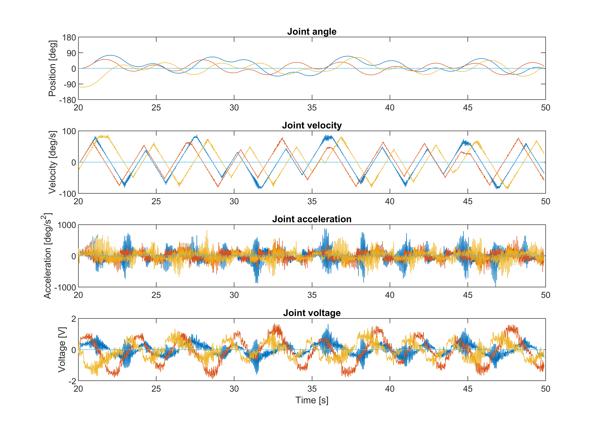
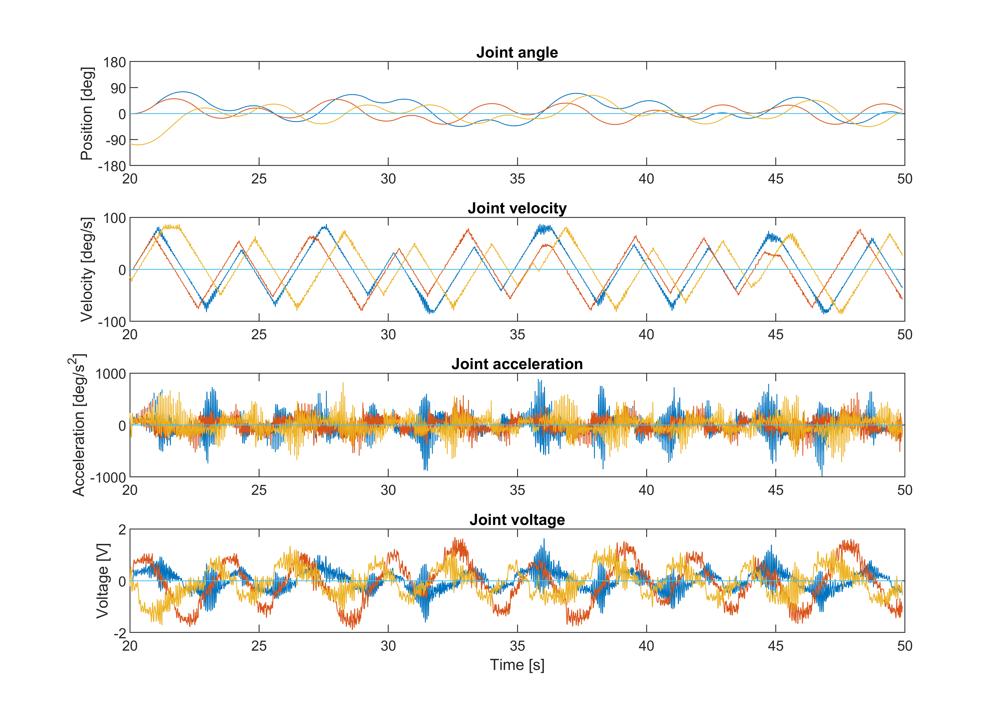

Project Overview
The dynamic model was formulated using the Euler-Lagrange Equations. This expression is nonlinear in terms of the dynamic parameters, so it was reformulated into a reduced canonical form that is linear to model parameters.
With dynamics in this form one can apply least square regression to estimate these dynamic parameters.
A joint trajectory was generated such that all the identifiable parameters are continuously excited. With this trajectory three training data sets were recorded and the noisy joint acceleration data was processed with a gaussian filter. A least square regression was performed all three data sets to estimate the dynamic parameters.
To validate the model, the average of the estimated dynamic parameters from two of the three training data sets was used to estimate the measured voltage of the third data set. With this dynamic model, the average RMS error between the predicted voltage and measured voltage was 0.088 Volts.